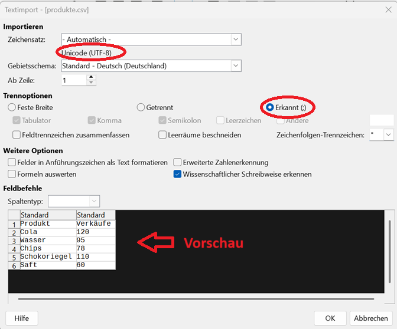
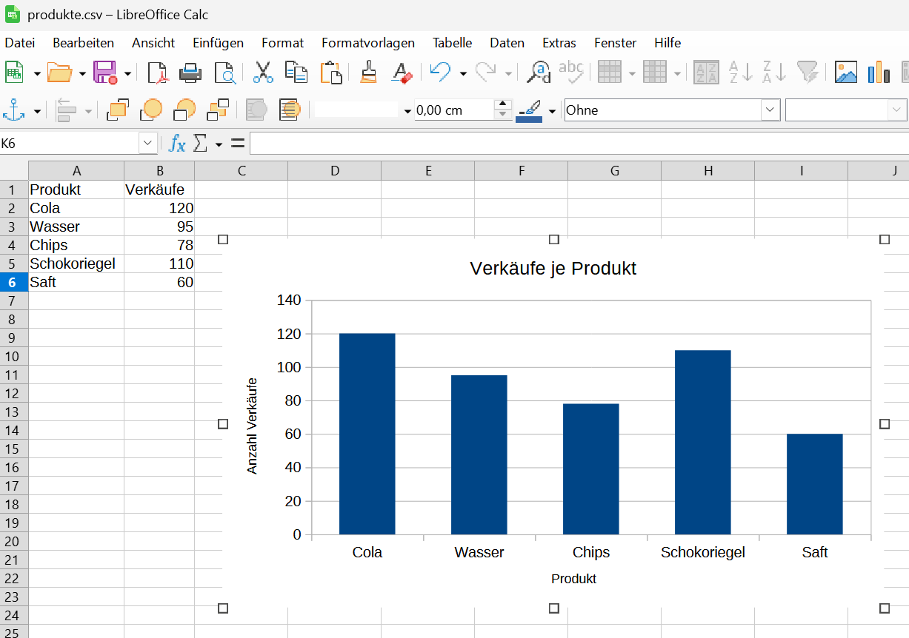

CSV-Dateien sind reine Textdateien, die durch ein Trennzeichen (z. B. ; oder ,) strukturierte Daten enthalten.
Um diese Daten übersichtlich als Tabelle darzustellen, kannst du sie mit LibreOffice Calc öffnen und auswerten.
Hier stand eine Abbildung, deren Nutzungsrechte für die Webseite nicht geklärt sind.
Datei → Öffnen und suche deine CSV-Datei.UTF-8.Semikolon (bzw. Komma, je nach Datei). Meist erkennt LibreOffice das Trennzeichen schon selbst, sonst stellst du es manuell ein.
UTF-8 prüfen.
LibreOffice zeigt den Dialog Textimport bei jeder CSV-Datei an – egal, ob du sie über
Datei → Öffnen oder per Doppelklick im Datei-Explorer öffnest. Beim Doppelklick musst du aber
sicher sein, dass die Datei wirklich mit LibreOffice und nicht mit Excel geöffnet wird: Excel zeigt keinen
Dialog und rät Trennzeichen und Zeichensatz selbst – dann stehen oft alle Daten in einer Spalte oder die
Umlaute sind kaputt. Der Weg über Datei → Öffnen in LibreOffice ist deshalb der sichere.
Nach dem erfolgreichen Import kannst du die Daten auch grafisch darstellen – z. B. mit einem Säulen- oder Kreisdiagramm.

Zahlen überzeugen erst, wenn man sie sieht: Data Analysts im Onlinehandel zeigen die Umsätze je Produktgruppe als Säulen, Controlling-Abteilungen stellen Monatsverläufe als Linien dar, und Datenjournalist*innen, etwa bei MDR oder Sächsischer Zeitung, bereiten Wahlergebnisse oder Wetterdaten grafisch auf. Dabei gilt: Ein Diagramm kann auch täuschen, zum Beispiel wenn die y-Achse nicht bei 0 beginnt. Wer beruflich Daten präsentiert, muss solche Verzerrungen vermeiden.
Der Diagrammtyp folgt aus der Frage: Säulen vergleichen Werte verschiedener Kategorien (Verkäufe je Produkt), eine Linie zeigt einen Verlauf über die Zeit (Temperatur je Stunde), ein Kreis zeigt Anteile an einem Ganzen (Verteilung von Antworten, zusammen 100 %). Jedes Diagramm braucht einen Titel, beschriftete Achsen und Einheiten.
Öffne die bereitgestellten CSV-Dateien mit LibreOffice Calc und stelle die Daten mithilfe von Diagrammen übersichtlich dar.
Achte beim Diagramm auf:
Begründe zu jedem Diagramm in einem Satz, warum der Diagrammtyp zur Frage passt.
Die Schülervertretung hat verschiedene Daten gesammelt. Gib für jede Frage den passenden Diagrammtyp an, nenne, was auf die Achsen bzw. in die Segmente kommt, und begründe deine Wahl in einem Satz.